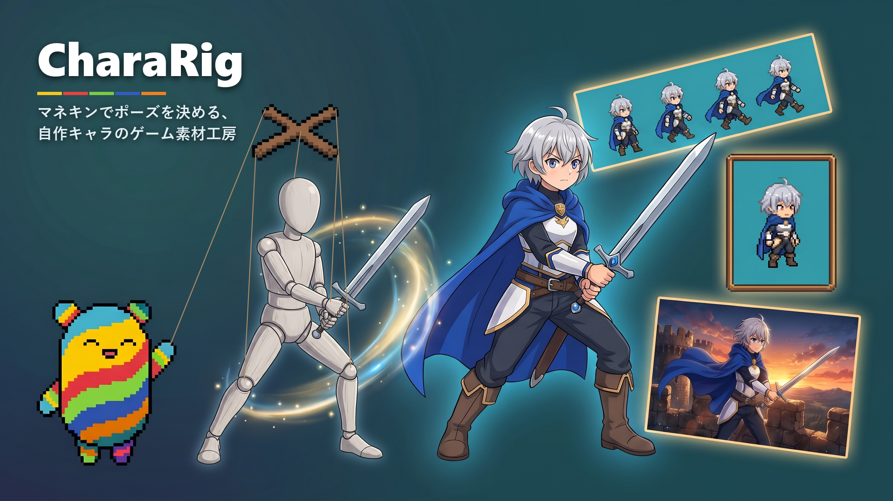

CharaRig — マネキンでポーズを決める、自作キャラのゲーム素材工房

自作キャラのイラストから、ゲーム用の素材（設定画・4方向の立ち絵・歩行・行動モーション・イベントCG）を段階的に作る Windows 用のツールです。 手足の位置や向きは、文章ではなくマネキン（灰色の人形）で指定します。
画像の生成には Google の画像生成AI（Gemini）を使います。生成には、ご自身で取得した Google AI Studio の APIキーが必要です。18歳以上の方を対象としています。